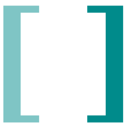
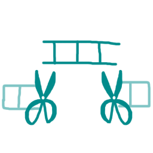
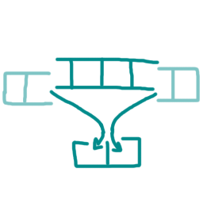
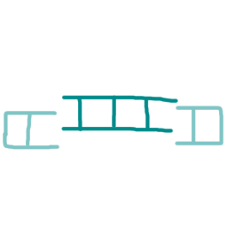
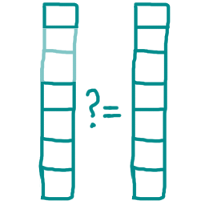
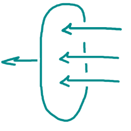
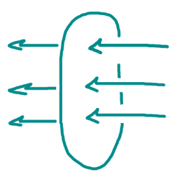
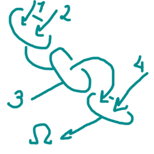

"PopUKi" is a library that collects many popular tools for functional programming and collection processing. This library was introduced in v0.2.
Types
popuki.endlisttokenFunctions
arrslice arr beg fin @-> array
@ where arr: array or string
@ beg: number
@ fin: number
@ slices ARR from index BEG to FIN. if :END is given as FIN, slices to the end.

arrslicebounds slice @-> array
@ where slice: array
@ returnes indeces where SLICE has been sliced (as an array of 2 elements) or VOID if SLICE is a full-sized array.

arrslicerestore slice @-> array
@ where slice: array
@ restores SLICE to its original unsliced form. returns SLICE if it has not been sliced.

eleq?
elementsequal? arr1 arr2 @-> void or 1
@ where arr1: any
@ arr2: any
@ compares two collections element-wise, regardless of their types.

filter pred coll @-> array
@ where pred: function
@ coll: array or string
@ returns COLL but only with elements that were assigned a non-void value by PRED.

map f coll @-> array
@ where f: function
@ coll: array or string
@ calls F on each element of COLL and returns results.

reduce f coll @-> any
@ where f: function
@ coll: array or string
@ calls F on each element of COLL sequentially and accumulates the result.

[]-Notation
"PopUKi" also provides another notation for array allocation:
F ([ a b ... c d ]) @ F is called on a newly created array
@ or
X = [ a b ... c d ] @ X is defined as an array
@ ^-----------^--- these spaces are important
E = [] @ E is set to an empty array.
@ ^--- no spaces
It may seem like a fancy macro, however, it is simply a function named "[" and two constants: "]" for endlist-token and "[]" that is equal to an empty array.